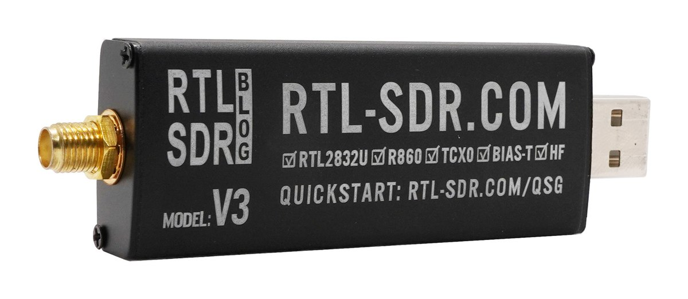

What's an RTL-SDR USB radio?
AntennaHead needs one small piece of hardware to actually receive radio: a USB stick called an RTL-SDR radio. Here's what it is, what it looks like, and which one to buy if you don't have one yet.
You don't need one for everything, though. Several AntennaHead
functions work without an RTL-SDR radio, especially on the
Devices page: stream any Core Audio input (a microphone or
line-in), have Text to Speech read .txt files from a
folder through the audio pipeline, or open ControlBooth. An RTL-SDR
radio is only needed to tune over-the-air stations.
A repurposed TV tuner
RTL-SDR radio dongles started life as cheap USB TV tuner sticks for watching over-the-air digital TV on a PC. In 2010, hobbyists found that the tuner chip inside — the Realtek RTL2832U — could be told to dump its raw radio samples straight over USB instead of decoding TV with them. That turned a $10–$30 TV stick into a general-purpose software-defined radio (SDR) receiver.
Receive-only
It digitizes a slice of radio spectrum and hands the raw samples to software over USB — it doesn't transmit anything.
All the tuning is software
The RTL-SDR itself does no demodulation. AntennaHead does the actual FM/AM/airband math on the samples it streams in.
Wide coverage
Roughly 500 kHz–1.7 GHz depending on the model — FM & AM broadcast, airband, NOAA weather radio, ham bands, and more.
What it looks like
This is the RTL-SDR Blog V3, the model we recommend. It's about the size of a USB flash drive: a black aluminum case with a gold SMA antenna connector on one end and a USB plug on the other. It plugs directly into a USB port (a short extension cable helps keep it away from other electronics), with an antenna attached to the connector.

V3 only. The V4 variants of the RTL-SDR Blog devices are not supported — AntennaHead works with the V3. It supports the V3’s HF direct-sampling mode, which lets the radio receive AM signals such as commercial AM broadcast stations and shortwave frequencies, and its bias-tee power setting for advanced users.
Which one to get
Generic RTL2832U TV-tuner sticks are still sold everywhere for a few dollars, but quality varies a lot: cheap crystals drift off-frequency, and there's little protection against static or strong nearby signals overloading the front end. We recommend a radio actually designed for SDR use instead of a repurposed TV tuner.
RTL-SDR Blog V3
The radio most SDR software — AntennaHead included — is built and tested against. Temperature-compensated crystal oscillator (TCXO) for a stable, accurate frequency lock, better ESD/static protection, an aluminum case for shielding, extended range down into HF, and a bias-tee for powering an external LNA.
What's in the box
It ships with a small telescopic whip antenna and SMA/MCX adapters — enough to get FM broadcast and airband working right away. A dipole or discone antenna later improves range on weaker signals.
V3 only. The V4 variants of the RTL-SDR Blog devices are not supported — AntennaHead works with the V3, so make sure you pick the V3 on the store page. It supports the V3’s HF direct-sampling mode, which lets the radio receive AM signals such as commercial AM broadcast stations and shortwave frequencies, and its bias-tee power setting for advanced users.
Buy the RTL-SDR Blog V3 (rtl-sdr.com) →
Once you have one, plug it into a USB port on your Mac and see the AntennaHead page for a tour of the tuner, favorites and scanner UI.